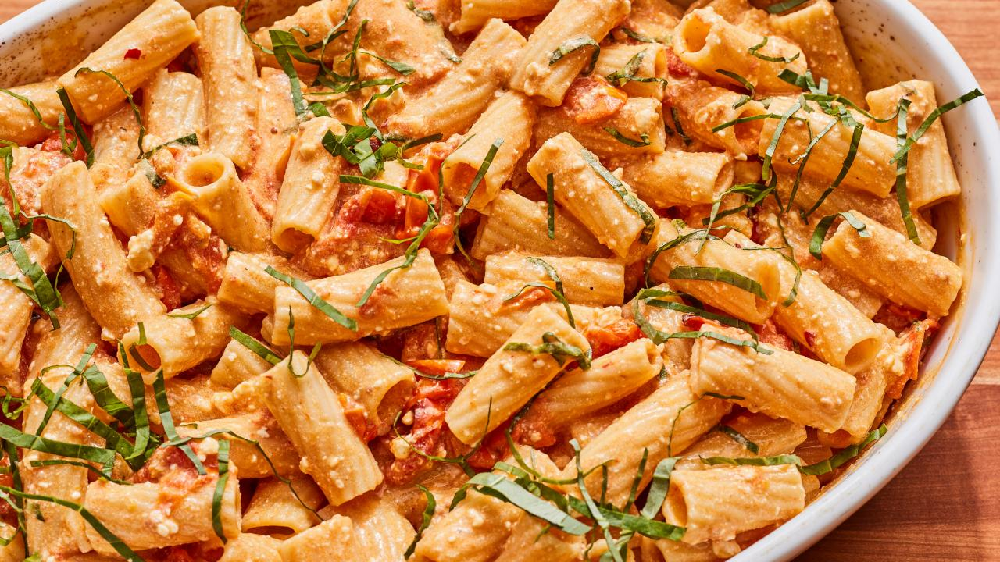

Pasta

Description
Baked Feta Pasta is a viral culinary sensation, combining simplicity and bold flavors. A bed of cherry tomatoes and garlic surrounds a block of feta cheese, drizzled with olive oil and seasoned. Roasted until tomatoes burst and feta turns golden, the dish transforms into a creamy, savory sauce. Tossed with al dente pasta, it delivers a harmonious blend of tangy feta, sweet tomatoes, and aromatic garlic. This fuss-free recipe has gained widespread popularity for its delicious results, making it a go-to choice for home cooks seeking a quick and tasty meal.
Ingredients
- Cherry tomatoes
- Extra virgin olive oil
- Kosher Salt
- Black pepper
- Red pepper flakes
- Feta cheese
- Mezze rigatoni
- Garlic
- Basil leaves
Steps
- Preheat the oven to 400 degrees F.
- Toss the cherry tomatoes and olive oil with 1/4 teaspoon of salt and several grinds of black pepper in a medium bowl until combined. Place the feta in the center of the tomatoes and season with a pinch of black pepper.
- Bake until the tomatoes have burst and the feta has softened, about 30 minutes. Raise the heat to 450 degrees F and continue to cook until the tomatoes and feta are golden brown, 10 to 15 minutes more.
- Meanwhile, bring a large pot of generously salted water to a boil over high heat. Add the pasta and cook until al dente, about 13 minutes. Reserve 1/2 cup of the cooking water, then thoroughly drain the pasta.
- As soon as the tomatoes and feta come out of the oven, stir in the garlic and red pepper flakes. Smash the tomatoes and feta into a smooth and creamy sauce.
- Add the pasta and half the basil and toss until evenly coated. Taste and adjust the seasoning with salt and pepper. Serve topped with the remaining basil.